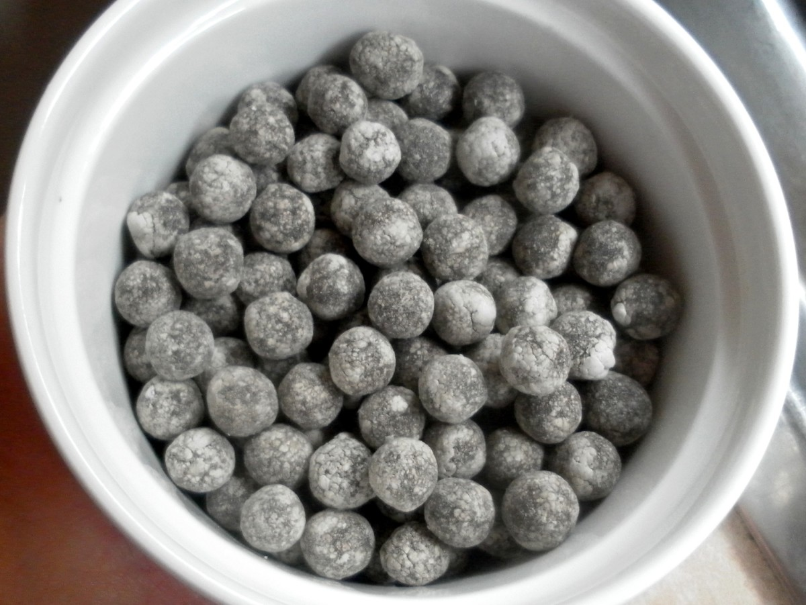

| Tapicoa balls |
1 cup |
 |
| Black tea bags |
4 bags |
 |
| Sugar/brown sugar |
about 2 cups |
> |
| Water |
7 cups for the boba, gallon for the tea |
 |
| Milk or Creamer |
Your desired amount |
|
| Directions |
| Boil your watter then add the tapioca balls in and let simmer for 30 minutes, sturring every 5-10 minutes. |
Once that is up turn off the heat move them to the side and let sit for 30 more minutes. |
Strain the boba balls and put in a container with brown sugar and a little water,mix, and let sit for 10 more minutes preferablely in the fridge so that it is chilled for your drink. |
| Boil some water for your tea. |
Once it is boiling pour it over the tea bags in a pitcher. |
Add your sugar and mix till incorperated. |
| Put some tea in a cup then add your desired amount of milk or creamer. |
Add some of the boba you made and you now have milk tea boba. |
 |